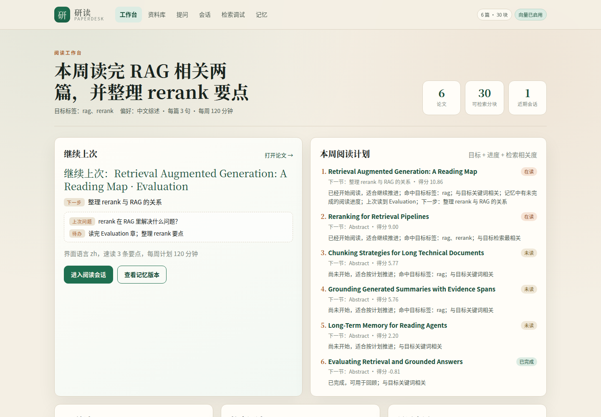
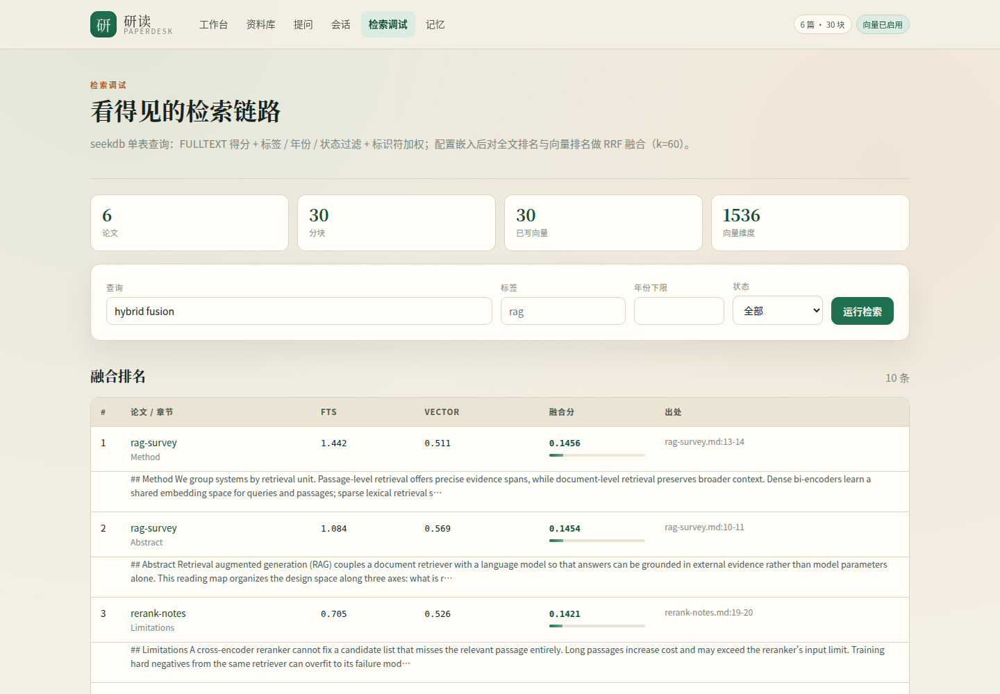

回忆成本高
「上次读到哪、下一步做什么」要么翻文件，要么凭记忆。读到一半停下，下次启动的成本比继续阅读本身还高。
论文笔记通常按主题散落在多个 Markdown 文件里。检索工具能找到片段，却不知道你上周读到哪里；聊天工具能总结，却容易脱离原文。
「上次读到哪、下一步做什么」要么翻文件，要么凭记忆。读到一半停下，下次启动的成本比继续阅读本身还高。
每次做阅读计划都重新翻库，已经开始的论文和没开始的论文混在一起，顺序每天都不一样。
普通检索只给片段，模型总结又可能编造。读者需要能点回章节和行号的结论，而不是一段无法核对的文字。
所有检索结果都会进入计划、速读或综述；所有阅读状态都会写回记忆。没有只为演示而存在的步骤。
解析 front matter 与章节，写入嵌入式 seekdb。
全文、标签、年份、状态与向量排名做 RRF 融合。
目标标签、阅读进度和检索结果共同决定下一篇。
分块交给模型，结论必须绑定真实引用编号。
进度与摘要写入 PowerContext，重启后继续。
工作台不是聊天框。它把资料库、计划、出处、会话和记忆放在同一套页面里，方便读者核对每个结论从哪里来。
每个结果同时保留全文得分、向量得分和原始文件行号，评审和读者都可以回到原文核对。
Rerank 在 RAG 中主要解决上下文污染：第一阶段检索为降低成本通常牺牲精度，无关段落会占用生成器的有限上下文。C3
它通过更强的模型联合分析 query 和 passage，对候选重新排序；实验中 rerank 提高了 nDCG@10，并减少了上下文中的无关段落。C1C5
Rerank 不能解决召回缺失：如果候选列表里没有相关段落，reranker 也无法把它找回来。C4


seekdb 是资料与证据层，PowerContext 是阅读上下文层。它们都改变产品行为，也都留下可重跑的记录。
嵌入式运行，保存论文元数据、章节分块和两种索引。检索结果直接决定计划顺序、速读内容与综述引用。
保存阅读目标、偏好、进度和会话摘要。进度通过原子记忆 artifact 的 ETag 修订，重启服务后仍能读回。
seekdb 决定这次能引用什么，PowerContext 决定这次从哪继续。
Markdown 笔记 │ 解析 front matter + 章节 ▼ seekdb（嵌入式） ├─ pd_documents 标题 / 作者 / 年份 / 标签 / 状态 / 原文 └─ pd_chunks 章节分块 + FULLTEXT + 过滤索引 + VECTOR(1536) + HNSW │ 检索结果：章节、文件、行号、FTS 得分、向量得分 ▼ PaperDesk 服务层 ├─ 阅读计划 / 继续上次 ← 读取记忆 ├─ 单篇速读 / 带引用综述 ← 读取检索证据 └─ 会话写回 / 检索评测 │ 目标 / 偏好 / 进度 / 会话摘要（ETag 修订） ▼ PowerContext 1.4.0（本地 HTTP 服务）
验证样例从空运行时开始，导入固定语料，写入记忆，重启服务，运行评测，再请求 8 个 Web 页面。脚本中的断言失败会直接终止。
| 检索模式 | recall@1 | recall@3 | recall@5 | MRR |
|---|---|---|---|---|
| 关键词基线（10 条查询） | 0.600 | 0.900 | 1.000 | 0.753 |
| 混合检索（FULLTEXT + 向量，RRF） | 0.600 | 0.900 | 1.000 | 0.753 |
提交仓库的 qoder/evidence/ 保存原始记录，评审可以按 sample/scenario/steps.md 逐步复现：
seekdb/：导入、DDL、查询结果与可执行 SQLpowercontext/：写入、版本、重启对比、语义召回llm/：综述请求、引用映射与回退记录eval/：关键词与混合检索的逐条指标web/：页面 HTML、HTTP 状态与健康检查需要 Python 3.11+ 与 uv。seekdb 以嵌入式库运行，不需要 Docker；模型密钥可选，缺失时自动使用全文检索与抽取式摘要。
# 1. 安装应用与 PowerContext cd qoder/app uv sync --extra dev --extra server # 2. 配置模型（可省略） cd .. cp .env.example .env # 填入 MINIMAX_API_KEY / MINIMAX_BASE_URL / MINIMAX_MODEL # 3. 从空状态跑完整场景 scripts/run_scenario.sh # 4. 打开工作台 # http://127.0.0.1:8080/
127.0.0.1:8011 就绪；配置 MiniMax 密钥后，嵌入模型为 embo-01（1536 维）。qoder/.runtime/seekdb。recall@5 ≥ 0.9、MRR ≥ 0.6。完整排错与重置步骤见仓库 qoder/RUNBOOK.md。验证语料由本项目编写，不含第三方论文全文。
项目在 Qoder 桌面端完成需求拆解、方案设计、实现、调试和验证。提交材料中的开发记录会把对话、diff 与运行证据对应起来。
先读赛题、仓库规范与基线，明确双技术分工、验收四项和明确不做的范围，再进入实现。
解析、seekdb 检索、记忆客户端、引用校验、Web 与测试逐步落地；遇到 500、排序偏差和限流时定位原因并留下修复。
59 项应用测试通过；完整场景脚本从空状态重跑；开发记录与 commit 映射随提交提供，Qoder 账号 UID 与发布截图由发布者补充。